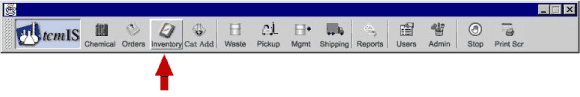

You can move to the Inventory screen by clicking on the Chemical button as shown below.

The inventory screen looks like the figure below. The Inventory work process lets you see the inventory On Hand or On Order:
- On Hand is the inventory in the Radian warehouse, and
- On Order are materials that have been ordered by Radian but not yet received.
The Search Text feature allows you to narrow your search. Leaving the Search Text blank allows you to look at all the chemicals in the location.
If you specify the facility, only those items that are max/mins for that Facility will be displayed. If you specify the hub in the Inventory field, only items in that hub will be displayed. You can limit your inventory search to those chemicals whose shelf life expires within a certain time frame in the search box labeled Expires Within.
After performing a search the screen looks like below.
If you want to find our more about the inventory of a particular item, select an item and right click to choose Inventory in the list. The item detail is given in the following format shown.